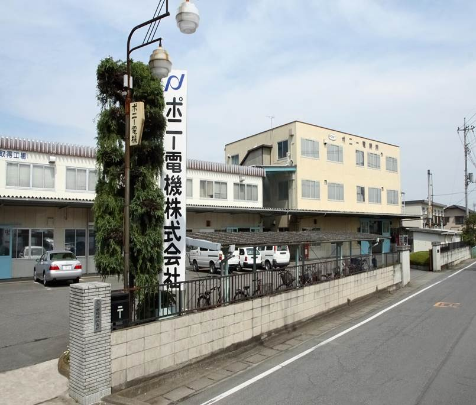
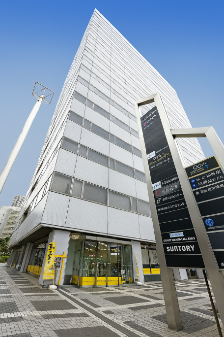

会社概要
| 社名 | ポニー電機株式会社 |
|---|---|
| 本社・工場 | 〒375-0003 群馬県藤岡市立石新田23番地 TEL 0274-42-0911㈹ |
| 横浜事業所 | 〒220-0004 神奈川県横浜市西区北幸2-8-4 横浜西口KNビル7F TEL 045-548-8412 ※「公正な研究活動」に関するお問い合わせもこちらで受け付けます。 |
| 設立 | 昭和28年7月（1953年） |
| 資本金 | 1,000万円 |
| 役員 | 代表取締役 長井 真一郎 常務取締役 長井 康博 取締役会長 長井 正博 |
| 従業員数 | 60人 |
| 取引銀行 | 群馬銀行新町支店、みずほ銀行高崎支店 |
| 工場面積 | 敷地3,350㎡／建物2,990㎡ |
| 福利厚生 | 草津リゾートマンション |
| お問合せ | TEL 0274-42-0911㈹／メール office@pony-e.jp |
| 協力会社 | 20社（県内10、県外10） |
営業日
アクセス
本社・工場および横浜事業所の地図・交通案内はアクセスページをご覧ください。